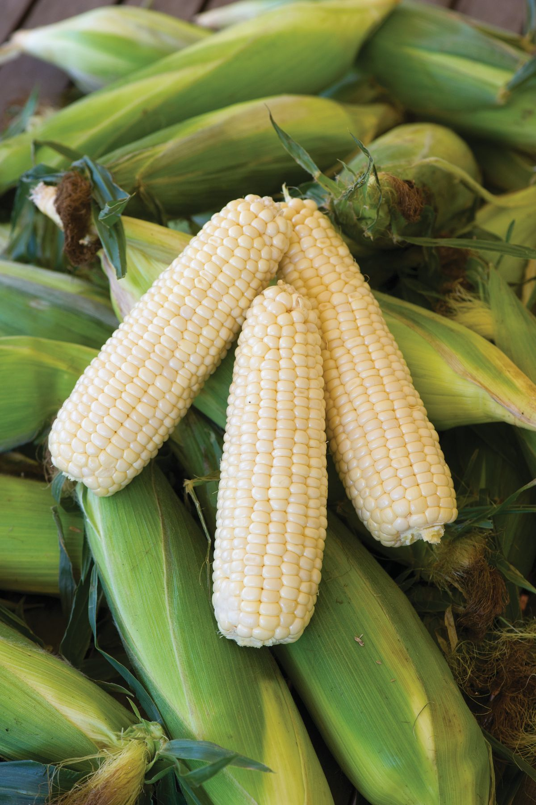
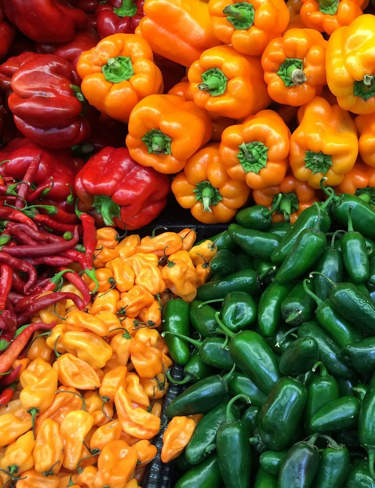

Maïs jaune
Riche en fibres, en vitamines et très nourrissant.
Découvrez notre sélection de produits agricoles locaux, cultivés et transformés avec soin par nos producteurs.
Riche en fibres, en vitamines et très nourrissant.

Idéal pour la consommation familiale et animale.
Source importante de glucides, nutritif et économique.
Produit 100 % naturel, savoureux et prêt à déguster.
Fruit juteux, sucré et riche en bienfaits naturels.
Jus naturel sans conservateurs, frais et rafraîchissant.
Plantée par nos producteurs et récoltée avec soin.

Un piment authentique qui relève tous vos plats.